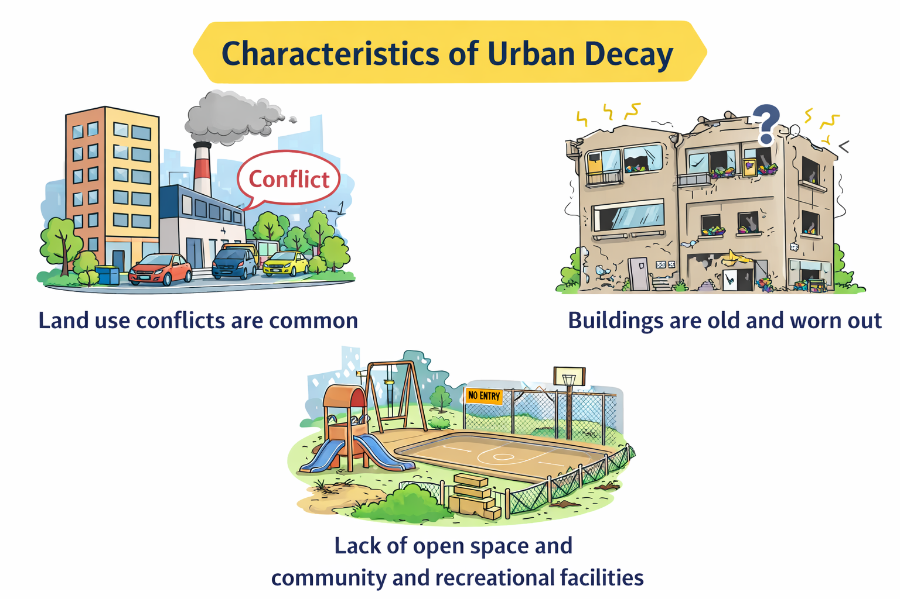

S1 Geography Final Revision · Hong Kong Curriculum
Appears in Section A • B • C
📌 Exam tip: Unit 4 appears in all three sections. Expect MC on definitions,
T/F on causes, and a structured question with a photo or map extract of an old district.
Cross-over with map reading (grid references, direction) is common — know which districts
to locate (e.g. Sham Shui Po, Mong Kok).
4.1 What are the major urban problems in Hong Kong?
Problem
Key symptoms
Exam tip
Housing problems
(a) Housing shortage — public-housing waiting time 5.5 yr (2020); >210,000 people live in subdivided flats; tenants spend 40% of income on rent; subdivided flats have the highest per-ft² rent; floor area per capita only 57 ft² — smaller than a prison cell; private housing too expensive for many; public housing rents lower but supply insufficient
MC: "Which is NOT a housing problem?" — watch for distractors
Structured Q may show a photo of a subdivided flat — describe the living conditions
(b) Poor living environment — overcrowded subdivided flats (entire families in one room); hygiene problems (shared toilets, poor rubbish disposal, pests); safety problems (fire hazards, exposed wiring, risk of collapse)
Traffic congestion
Peak-hour jams at Cross-Harbour Tunnel, Tsuen Wan Rd, Nathan Rd; vehicle growth outpaces road growth; MTR platforms crowded with passengers during peak hours
a. Air pollution — cars and power plants are the major sources; roadside pollution severe in commercial areas with heavy traffic (e.g. Causeway Bay); high pollutant levels cause respiratory and cardiovascular health problems b. Land pollution — solid waste is the largest source; >10,000 tonnes sent to landfills daily, mostly food waste; landfill leachate pollutes soil and groundwater; 3 landfills nearing capacity; low recycling rate (~30%) c. Water pollution — 3 million m³ of sewage daily, mainly from domestic, commercial, and farming activities; water quality only met 80% of Water Quality Objectives d. Noise pollution — residential buildings close to roads and busy commercial areas suffer from traffic, road maintenance, and business activity noise; affects mental health and quality of life e. Light pollution — in Yau Tsim Mong district, bright billboard lights waste energy and affect residents' daily lives
Structured Q may ask: "Suggest two types of pollution in Hong Kong and their causes."
Urban decay
Ageing buildings, poor sanitation, safety hazards in old districts
See 4.2 — the most detailed sub-topic
👨🏫 Teacher's note — Why housing problems are so severe:
Three root causes interact: (1) limited land — only ~24% developed,
40% protected as country parks; (2) high population density — 7.5+ million people;
(3) government land supply system — land auctions keep prices high.
Memorise all three for 3-mark "explain" questions.
4.2 What are the characteristics of urban decay in old urban areas?
Section C favourite — expect a photo or map extract of an old district
(Sham Shui Po, Yau Ma Tei, Wan Chai) with labelled questions.

4.2.1 Land use conflicts
Land use conflict occurs when two incompatible land uses are too close to each other.
Residential vs. markets and garages — residential buildings located near markets and garages create a noisy and unpleasant living environment
Residential vs. dangerous facilities — some people live close to hazardous facilities (e.g. gas stations, factories) that threaten their safety
Mixed industrial and residential uses — factories next to flats (e.g. old Tsuen Wan, Cheung Sha Wan) cause noise, odour, and fire hazards
Hawker zones vs. residents — street markets bring noise and rubbish alongside livelihood; tension between stall holders and nearby residents
4.2.2 Old and worn-out buildings
Many buildings in old urban areas are over 40 years old and lack proper repair and maintenance.
More electricity, more vehicles → air pollution, light pollution
Cause 2: Poor urban planning
Effect
Explanation
Historical lack of planning
Early colonial development lacked comprehensive zoning → mixed industrial-residential use
Land use conflicts
No separation of factories, homes, and shops → safety hazards, noise, odour
Inadequate transport network
Roads not designed for today's vehicle numbers → chronic congestion
Insufficient open space
Old districts lack parks, playgrounds, recreational areas
No density controls
Older areas allowed very high building density → overcrowding, poor ventilation and lighting
Strata-title system
Makes redevelopment difficult because 80–90% owner consent is required → urban decay persists
Cause 3: Rapid economic development
Effect
Explanation
High land prices
Hong Kong as a global financial centre → commercial land outbids residential → housing pushed to small, old flats
Rising affluence
More private car ownership → congestion; more consumption → more waste
Past industrialization
Legacy pollution in air (factory emissions), land (industrial waste), water (untreated discharge)
Profit from subdividing
High land value incentivizes landlords to subdivide flats → poor living environment
Construction boom
Infrastructure and redevelopment projects → noise pollution, dust, construction waste
Tourism growth
Short-term rentals reduce housing supply; more visitors strain transport and waste systems
The redevelopment bottleneck
Urban decay emerges→Land use conflicts + worn-out buildings + lack of facilities→URA intervention needed→Strata-title owners disagree→Slow progress
⚠️ MC trap:"Who is responsible for urban renewal in Hong Kong?"
→ Urban Renewal Authority (URA), established 2001.
Not the Housing Authority, not the Development Bureau directly.
Key terms — quick revision cards
Urban decay
Deterioration of buildings and infrastructure in old urban areas
Housing shortage
Insufficient housing supply relative to demand, leading to long waiting times and overcrowding
Subdivided flat
A flat divided into 2+ smaller units, often with shared kitchen/toilet
Cage home
A partitioned bed space enclosed by metal mesh; ~0.5–1 m²
Strata-title
Ownership of an individual unit in a multi-storey building (not the land)
Tong lau (唐樓)
Pre-1960s Chinese tenement building, 3–6 storeys, no lift
URA
Urban Renewal Authority — body responsible for redeveloping old districts (est. 2001)
Land use conflict
When different activities (industrial, residential, commercial) compete for the same space
Light pollution
Excessive artificial light that disrupts sleep and obscures the night sky
Induced demand
Building more roads → more people drive → congestion returns
Exam-style practice questions
Section A — Multiple Choice (1 mark each)
Q1
Which of the following is NOT a major urban problem in Hong Kong?
A. Traffic congestion
B. Urban decay
C. Desertification
D. Housing shortage
Q2
The Urban Renewal Authority (URA) was established in:
A. 1987
B. 2001
C. 2005
D. 2010
Q3
Which of the following is a land use conflict in old urban areas?
A. Building more roads
B. Factories located next to residential flats
C. Increasing the recycling rate
D. Building new country parks
Section B — True or False (1 mark each)
Q4
"Building more roads is an effective long-term solution to traffic congestion."
False — induced demand means new roads fill up quickly.
Q5
"Redevelopment of old buildings under the strata-title system is difficult because 100% owner consent is required."
False — 80–90% consent is required, but that is still very hard to reach.
Q6
"Light pollution is a type of environmental pollution in Hong Kong."
True — excessive neon signs and building lights contribute to light pollution.
Section C — Structured Question (6 marks)
Q7 — Refer to the map extract of Sham Shui Po
(a) Describe two characteristics of urban decay shown on the map. (2 marks)
(b) Explain how population increase contributes to urban problems in Hong Kong. (4 marks)
Suggested structure:
Point → Explanation → Example
e.g. "Population increase (point) raises demand for housing beyond supply (explanation). For example, the average waiting time for public rental housing was 5.5 years in 2020 (example)."
✅ Revision checklist
Tick each box as you revise:
I can list the major urban problems including housing shortage, poor living environment, traffic congestion, environmental pollution (a–e), and urban decay
I can describe the three aspects of urban decay: land use conflicts, old and worn-out buildings, lack of facilities
I can explain three causes of urban problems: population increase, poor urban planning, rapid economic development
I know what "strata-title" means and why it blocks redevelopment
I know the role of the URA (established 2001)
I know what "tong lau" and "cage homes" are
I can name 3 old urban districts with urban decay
I understand induced demand (traffic)
I know that ~40% of HK land is country parks, ~24% is developed
I can name five types of pollution (air, land, water, noise, light)